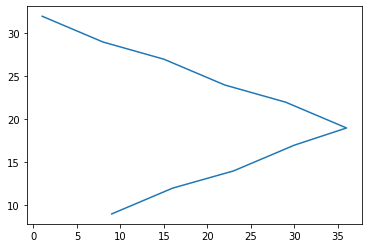
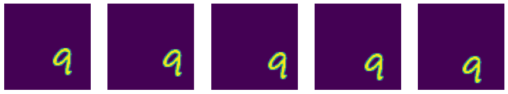
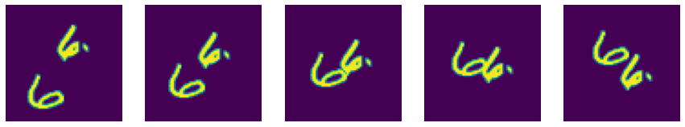
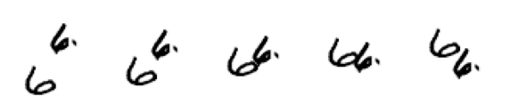
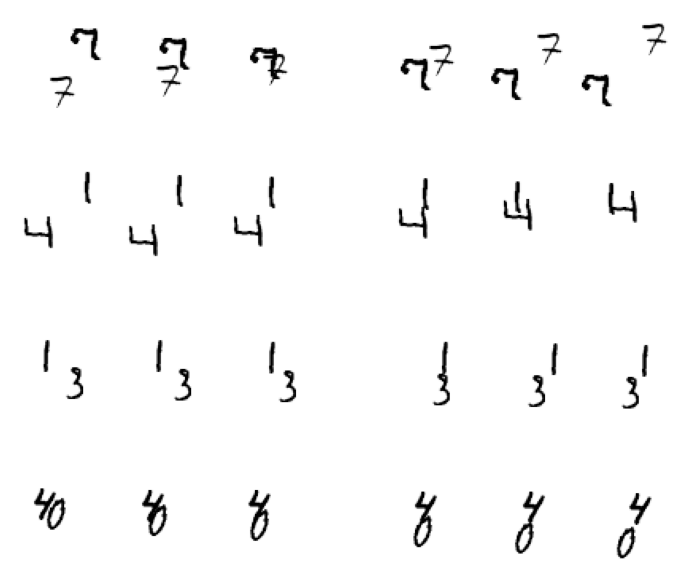
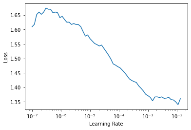
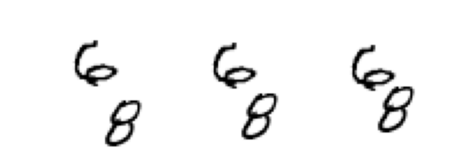
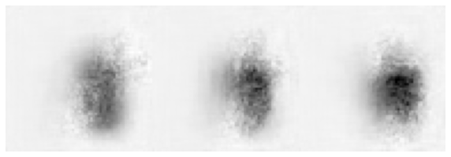

from fastai.vision.all import *
This tutorial uses fastai to process sequences of images. In this problem, the model has to predict the future frames of a sequence. We will solve a toy example where MNIST digits are moving on a canvas. This is an ImageTuple to ImageTuple task. - First we will construct a moving MNIST dataset. - We will train a simple model to forecast the movent of numbers - Finally we will try to make a “SOTA” model work
Building Moving MNIST
from MNIST
We are going to construct the dataset starting from the MNIST dataset available from fastai.
path = untar_data(URLs.MNIST)
path.ls()(#2) [Path('/home/tcapelle/.fastai/data/mnist_png/training'),Path('/home/tcapelle/.fastai/data/mnist_png/testing')]MNIST files are split in a training and testing folder. We will use the trianing one for our experiments.
files = get_image_files(path/'training')
files(#60000) [Path('/home/tcapelle/.fastai/data/mnist_png/training/6/30582.png'),Path('/home/tcapelle/.fastai/data/mnist_png/training/6/41995.png'),Path('/home/tcapelle/.fastai/data/mnist_png/training/6/1830.png'),Path('/home/tcapelle/.fastai/data/mnist_png/training/6/53900.png'),Path('/home/tcapelle/.fastai/data/mnist_png/training/6/51920.png'),Path('/home/tcapelle/.fastai/data/mnist_png/training/6/17867.png'),Path('/home/tcapelle/.fastai/data/mnist_png/training/6/59601.png'),Path('/home/tcapelle/.fastai/data/mnist_png/training/6/1768.png'),Path('/home/tcapelle/.fastai/data/mnist_png/training/6/4560.png'),Path('/home/tcapelle/.fastai/data/mnist_png/training/6/35616.png')...]we can look at the first image:
img = load_image(files[0])
imgimg.shape(28, 28)We will define some constants to work with. - digit_size: is the resolution of the MNIST images (28x28) - image_size: is the canvas size (64x64) - step_length: is the “speed” of the moving digits on the canvas
digit_size = 28
image_size = 64
step_length = 0.2
N = len(files)we first have to create random trayectories of the (28x28) digits on the canvas, we will make them bounce back when they hit a border. We will compute the trayectory of the corner of the digit.
def get_random_trajectory(seq_length):
"Generate a trajectory"
canvas_size = image_size - digit_size
x, y, v_x, v_y = np.random.random(4)
out_x, out_y = [], []
for i in range(seq_length):
# Take a step along velocity.
y += v_y * step_length
x += v_x * step_length
# Bounce off edges.
if x <= 0:
x = 0
v_x = -v_x
if x >= 1.0:
x = 1.0
v_x = -v_x
if y <= 0:
y = 0
v_y = -v_y
if y >= 1.0:
y = 1.0
v_y = -v_y
out_x.append(x * canvas_size)
out_y.append(y * canvas_size)
return tensor(out_x, dtype=torch.uint8), tensor(out_y, dtype=torch.uint8)x,y = get_random_trajectory(10)
plt.plot(x,y)
let’s grab a random image from the dataset
from random import choice
def get_rand_img():
"Get one digit randomly"
img = load_image(choice(files))
return TensorImage(img)we will directly convert to a tensor, to work on the canvas.
timg = get_rand_img()
timg.show();to move the digit, we get one randomly and shift using the random trayectory.
def generate_moving_digit(n_frames, image_size=64):
"Move one digit on the canvas"
digit_image = get_rand_img()
xs, ys = get_random_trajectory(n_frames)
canvas = torch.zeros((n_frames, 1, image_size, image_size), dtype=torch.uint8)
for i,(x,y) in enumerate(zip(xs,ys)):
canvas[i, 0, y:(y+digit_size),x:(x+digit_size)] = digit_image
return canvasshow_images(generate_moving_digit(5))
we can combine multiple digits with different trayectories at once.
def generate_moving_digits(n_frames, digits=1):
"generate multiple digits"
return torch.stack([generate_moving_digit(n_frames) for n in range(digits)]).max(dim=0)[0]digits = generate_moving_digits(5, 2)
show_images(digits)
We are going to use the mid level APi, but as we already have a tensor, is very simple.
class ImageSeq(fastuple):
@classmethod
def create(cls, t, cl_type=TensorImageBW):
return cls(tuple(cl_type(im) for im in t))
def show(self, ctx=None, **kwargs):
return show_image(torch.cat([t for t in self], dim=-1), ctx=ctx, **self[0]._show_args, figsize=(10,5), **kwargs)img_seq = ImageSeq.create(digits)img_seq.show();
we will create a simple function to split our sequence on (x,y) where the first n_in frames will serve as input and the last n_out frames as target.
def get_items(n_in=3, n_out=3, n_digits=2):
n_frames = n_in + n_out
digits = generate_moving_digits(n_frames, n_digits)
x, y = digits[0:n_in], digits[n_in:]
return x, yclass ImageSeqTransform(Transform):
def __init__(self, n_in, n_out, n_digits=2, cl_type=TensorImageBW):
store_attr()
def encodes(self, idx):
x, y = get_items(self.n_in, self.n_out, self.n_digits)
return ImageSeq.create(x, self.cl_type), ImageSeq.create(y, self.cl_type)as the images are generated on the fly, we pass a list of integers to the TfmdLists constructor that will only serve as a counting mechanism.
idxs = range_of(10)
splits = [0,1,2,3,4,5,6,7], [8,9]tls = TfmdLists(idxs, ImageSeqTransform(3,3), splits=splits)we will put everything together into a DataLoaders object, and we are ready to train.
dls = tls.dataloaders(bs=4, after_batch=[IntToFloatTensor, Normalize.from_stats(*mnist_stats)])as we can see with one_batch and explode_types, we get 3 images as input, and 3 as output
b = dls.one_batch()
explode_types(b){tuple: [{__main__.ImageSeq: [fastai.torch_core.TensorImageBW,
fastai.torch_core.TensorImageBW,
fastai.torch_core.TensorImageBW]},
{__main__.ImageSeq: [fastai.torch_core.TensorImageBW,
fastai.torch_core.TensorImageBW,
fastai.torch_core.TensorImageBW]}]}b[0][0].shapetorch.Size([4, 1, 64, 64])Refactor
Let’s put everything together to train with a large dataset
def get_dls(n_in, n_out, N=100, bs=4):
idxs = range_of(N)
splits = RandomSplitter()(idxs)
tls = TfmdLists(idxs, ImageSeqTransform(n_in, n_out), splits=splits)
return tls.dataloaders(bs=bs, after_batch=[IntToFloatTensor, Normalize.from_stats(*mnist_stats)])dls = get_dls(3, 3, N=1000, bs=4)we have to make a custom show_batch method using the @typedispatch decorator to be able to show our ImageSeq objects.
@typedispatch
def show_batch(x:ImageSeq, y:ImageSeq, samples, ctxs=None, max_n=6, nrows=None, ncols=2, figsize=None, **kwargs):
if figsize is None: figsize = (ncols*6, max_n* 1.2)
if ctxs is None:
_, ctxs = plt.subplots(min(x[0].shape[0], max_n), ncols, figsize=figsize)
for i,ctx in enumerate(ctxs):
samples[i][0].show(ctx=ctx[0]), samples[i][1].show(ctx=ctx[1])dls.show_batch()
How to build a Model for this task?
Trying something simple
As we saw before, the batch is composed of an ImageSeq as input and an ImageSeq as output, so we need a model capable of processing this. Let’s build something super simple. - We already have an image to image fastai model called DyanmicUnet - This model takes one image, and produces another one. - The simplest model would not have temporal capabilities, and only process one image at a time. You encode the first image and decode the first target.
x,y = dls.one_batch()class SimpleModel(Module):
def __init__(self, arch=resnet34):
encoder = create_body(arch, n_in=1)
self.unet = DynamicUnet(encoder, n_out=1, img_size=(64, 64))
def forward(self, image_seq):
return [self.unet(img) for img in image_seq]model = SimpleModel().cuda()out = model(x)
out[0].shapetorch.Size([4, 1, 64, 64])class SeqLoss:
def __init__(self, loss_func):
self.loss_func = loss_func
def __call__(self, inp_seq, targ_seq):
return sum([self.loss_func(inp, tar) for inp, tar in zip(inp_seq, targ_seq)])loss_func = SeqLoss(MSELossFlat())loss_func(out, y)TensorBase(1.6183, device='cuda:0', grad_fn=<AliasBackward>)learn = Learner(dls, model, loss_func=loss_func)learn.lr_find()SuggestedLRs(lr_min=0.001096478197723627, lr_steep=7.585775847473997e-07)
learn.fit_one_cycle(4, 1e-4)| epoch | train_loss | valid_loss | time |
|---|---|---|---|
| 0 | 1.112344 | 1.067903 | 00:15 |
| 1 | 1.034838 | 1.020462 | 00:15 |
| 2 | 1.028217 | 1.004328 | 00:15 |
| 3 | 1.018567 | 1.035076 | 00:15 |
p,t = learn.get_preds()As you can see, the results is a list of 3 tensors with 200 samples each.
len(p), p[0].shape(3, torch.Size([200, 1, 64, 64]))def show_res(t, idx):
im_seq = ImageSeq.create([t[i][idx] for i in range(3)])
im_seq.show();k = random.randint(0,100)
show_res(t,k)
show_res(p,k)
